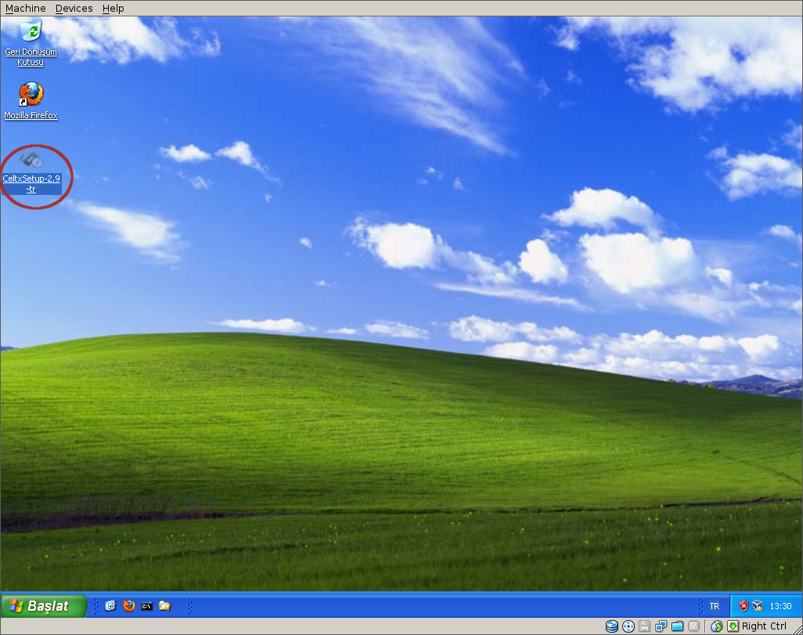
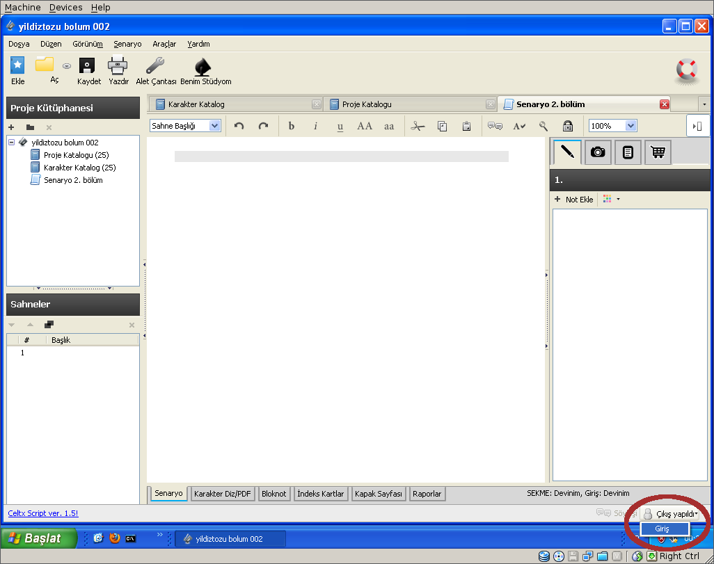

CELTX KURULUM NOTLARI
Kurulum notları, Windows XP işletim sistemi ve Mozilla Firefox web tarayıcısı kullanıldığı varsayılarak hazırlanmıştır. Ufak değişikliklerle diğer ortamlar için de kullanılabilir. Celtx programını kurmak ve kullanmaya başlamak için aşağıdaki adımları takip ediniz.
1. Web tarayıcınızın adres satırına www.celtx.com yazıp Celtx'in web sayfasını açınız. "Other Languages and systems" linkine tıklayınız.
2. Programın Türkçe sürümünü yüklemek için Türkçe satırındaki "download" linkine tıklayınız.
3. "Dosyayı Kaydet" düğmesine tıklayarak kurulum programını kaydetmek istediğinizi belirtiniz.
4. Kurulum programını nereye kaydetmek istediğinizi soran pencere açılacaktır. "Masaüstü" konumunu seçip "Kaydet" düğmesine tıklayınız.
5. Kurulum programı masaüstüne gelecektir. Program resmine tıklayarak kurulumu başlatınız.
6. Kurulum programının çalışmasına "Çalıştır" düğmesine tıklayarak izin veriniz.
7. Açılan pencerede "İleri" düğmesine basarak bir sonraki adıma geçiniz.
8. Lisans sözleşmesini kabul ettiğinizi belirtmek için "Lisans sözleşmesini kabul ediyorum" kutusunu tıklayıp daha sonra "İleri" düğmesine basınız.
9. "Standart" kurulum seçeneği default olarak seçili olacaktır. Bunu değiştirmeden "İleri" düğmesine tıklayıp bir sonraki adıma geçiniz.
10. "Kur" düğmesine tıklayarak kurulumu başlatınız.
11. Kurulum böylece tamamlanmış oldu. "Son" düğmesine tıklayıp kurulum programını kapatınız.
12. Kurulum tamamlandığında Celtx programını başlatacak olan programın resmi, masaüstüne gelecektir. Bu resme tıklayıp Celtx programını başlatabilirsiniz.
13. Internetteki bir bilgisayarda bulunan ortak çalışma alanına "Stüdyo" denmektedir. Stüdyoda yer alan proje dosyalarını görebilmek ve bunlarla çalışabilmek için "Stüdyodan Aç" düğmesine tıklayınız.
14. Web tarayıcısı açılacak ve sisteme giriş yapmanızı sağlayan "Celtx Studio" sayfası görüntülenecektir. Sisteme giriş yapabilmek için "Studio ID" bölümüne kullanıcı adınızı, "Password" bölümüne parolanızı yazıp "Log in" düğmesine tıklayınız.
15. Mevcut projeleri görebilmek için "Projects" resmine tıklayınız.
16. Üzerinde çalışmak istediğiniz projeyi seçip menüden "Edit" seçeneğine tıklayınız.
17. Bir defaya mahsus olarak Celtx projelerini hangi programla açmak istediğinizi soran bir pencere açılacaktır. Listeden "Celtx" seçeneğini seçip "Celtx bağlantıları ile ilgili seçimimi anımsa" kutusunu işaretleyip daha sonra "Tamam" düğmesine tıklayınız.
18. Proje dosyası açılacaktır. Artık üzerinde değişiklikler yapmaya başlayabilirsiniz. Yaptığınız değişikliklerin kaydedilmesi için "Kaydet" düğmesine tıklayınız. Projeyi Stüdyodan açmış olduğunuz için kaydet dediğinizde yaptığınız değişiklikler Internetteki Stüdyo bilgisayarına kaydedilecektir. O andan itibaren diğer kullanıcılar da projede yapılmış değişiklikleri görebilir.
19. Sürekli Internete bağlı çalışmak istemiyorsanız projenin bir kopyasını kendi bilgisayarınıza kaydedebilirsiniz. Bunun için menüdeki "Dosya" seçeneğinden "Farklı Kaydet" seçeneğine tıklayınız.
20. Proje dosyasını bilgisayarınızda nereye kaydetmek istediğinizi soran pencere açılacaktır. Uygun bir yer seçip "Kaydet" düğmesine tıklayınız.
21. Kendi bilgisayarınızdaki proje dosyasından çalışmayı tercih ediyorsanız yaptığınız değişikliklerin Stüdyo alanına da kaydedilmesi için gerekli gördükçe menüdeki "Dosya" seçeneğininden "Stüdyoya Kaydet" bölümüne tıklayınız.
22. Stüdyodaki ilgili proje dosyasını seçip "Tamam" düğmesine tıklayınız.
23. Stüdyo bölümüne yapılan her kayıtta, dosyanın eski hali de saklanmakta ve gerektiğinde eski haline geri dönülebilmektedir. Kayıt esnasında yapılan son değişikliklerin neler olduğunu hatırlatacak kısa bir not ekleyip "Tamam" düğmesine basınız. Böylece proje geçmişine bakıldığında bu kayıtla hangi aşamaya gelindiği anlaşılabilecektir.
24. Celtx programı ile çalışırken projede yer alan diğer kullanıcılarla da haberleşebilmek için "Söyleşi" linkine tıklayıp Celtx Chat programını başlatabilirsiniz.
25. Proje dosyasını kendi bilgisayarınıza kaydettiyseniz Celtx programını bir sonraki çalıştırmanızda proje dosyasını, stüdyo yerine kendi bilgisayarınızdan açabilirsiniz. Bunun için en son kullanılan projelerin listelendiği bölümden proje adına tıklayınız.
26. Proje dosyasını kendi bilgisayarınızdan açtığınızda, yaptığınız değişikliklerin stüdyo alanına da kaydedilmesi ve ekipdeki diğer kişilerin yaptığınız değişiklikleri görebilmesi için 21. adımda yapıldığı gibi "Stüdyoya Kaydet" demeniz gerekmektedir. Yalnız henüz stüdyoya giriş yapmış olmadığınızdan bu komutu vermeden önce "Giriş" linkine tıklamalısınız.
Açılan stüdyo giriş penceresinde kullanıcı adı ve şifre bölümlerini doldurduktan sonra "Tamam" düğmesine tıklayarak giriş yapabilirsiniz. Stüdyo girişi yaptığınıza göre artık 21. adımda anlatıldığı gibi "Stüdyoya Kaydet" komutunu kullanabilirsiniz.
Kendi bilgisayarınızda kayıtlı proje dosyasından çalışıyor olsanız bile diğer ekip çalışanları ile söylesi (chat) yapabilmeniz için stüdyoya giriş yapmanız iyi olacaktır.